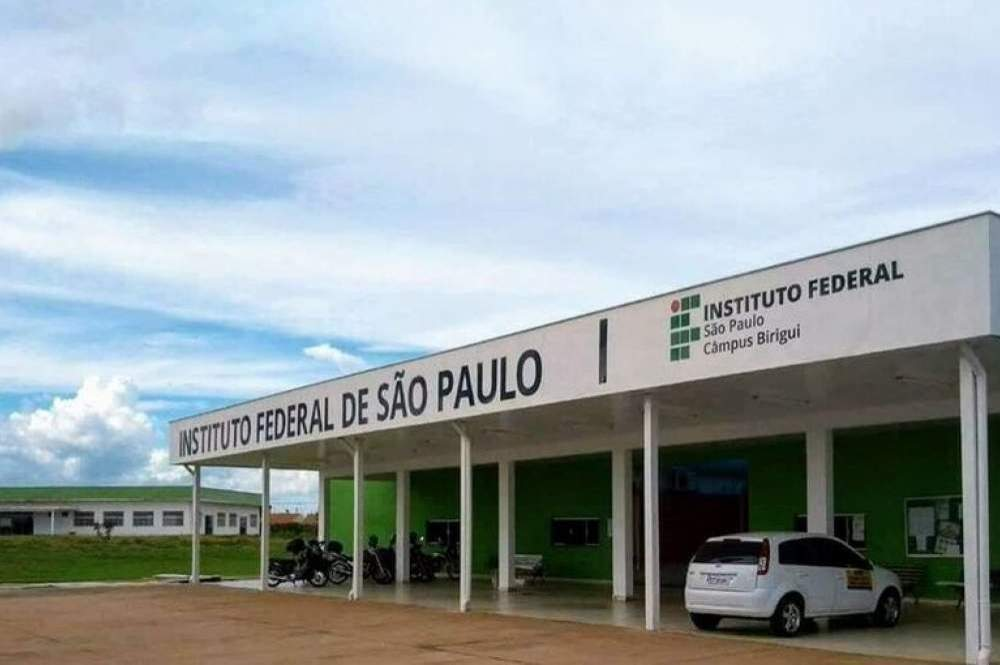
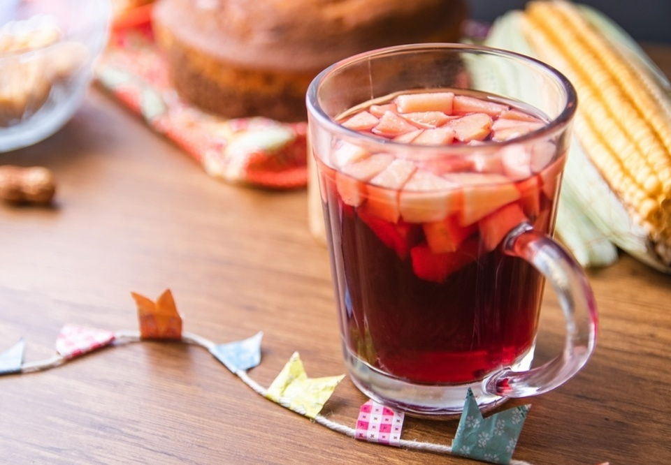
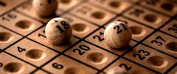
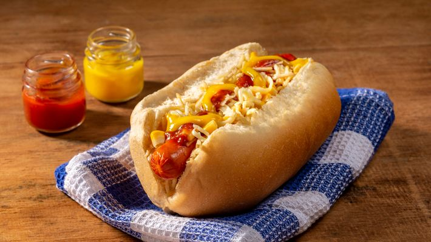
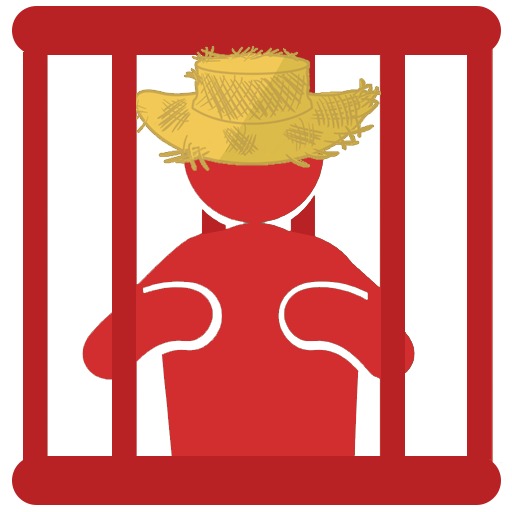
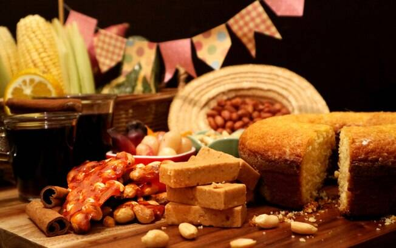
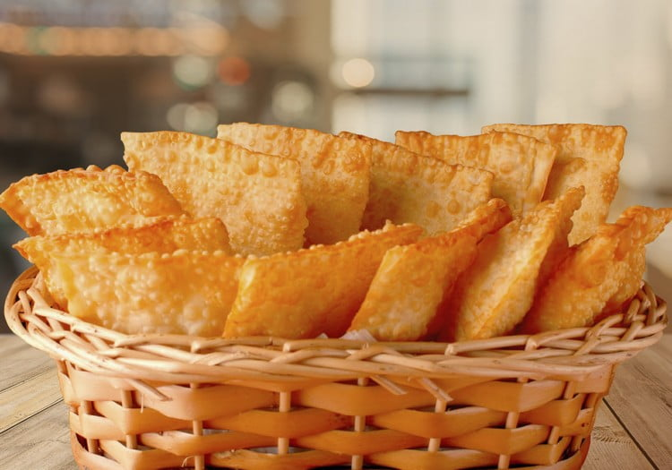

Uma Grande Festa de Diversão e Cultura

Festas Juninas
As festas juninas são comemorações que acontecem no mês de junho no Brasil. Nela se comemoram três santos populares: Santo Antônio, São Pedro e São João.
A origem da festa junina é pagã, ou seja, é contrária à doutrina cristã, porque as festas que deram origem às festas juninas homenageavam os deuses da natureza e da fertilidade e pediam fartura nas safras, pois era nessa altura que começava o período da colheita de cereais.
Mas, como a igreja não conseguia acabar com a popularidade dessa festa - que surgiu há centenas de anos -, acabou aderindo a ela e atribui-lhe um caráter religioso.
Tradicionalmente, as festas juninas começam no dia 12 de junho, véspera do dia de Santo Antônio, e encerram no dia 29 de junho, dia de São Pedro. Já nos dias 23 e 24 é celebrado o dia de São João.
Origem da festa junina
A origem da festa junina é pagã e, assim, não tinha o caráter religioso que assumiu anos depois, e que continua até hoje.
Ainda antes da Idade Média, no hemisfério norte, as pessoas comemoravam a chegada do verão - no mês de junho - homenageando os deuses da natureza e da fertilidade, ao mesmo tempo em que pediam uma colheita farta.
Isso acontecia porque era a altura da colheita de cereais, tal como o milho - que hoje é o ingrediente mais comum nas comidas típicas de festa junina.
As fogueiras, um símbolo característico das festas juninas atualmente, também têm origem na festa pagã, porque era costume fazer fogueiras nas celebrações.
Como a igreja não conseguia acabar com a popularidade dessa festa pagã, acabou aderindo às festas juninas atribuindo-lhes um caráter religioso.
Quem trouxe a festa junina para o Brasil foram os portugueses, no período colonial. Em Portugal, a festa junina tinha o nome de Festa Joanina - possivelmente pelo fato de acontecer em junho ou talvez por causa de São João, que é o principal santo da comemoração - motivo pelo qual as festas juninas também são chamadas de Festa de São João.
Onde Ocorrerá um Desses Maravilhosos Eventos?
Ocorrerá no Instituto Federal De Educação, Ciência e Tecnologia Câmpus Birigui, localizado no Portal da Pérola 2, na Rua Pedro Cavalo, Nº 709 - Residencial Portal da Pérola II - Birigui-SP.
Aprecie Este Evento com:
-
Bebidas
 -
Bingo
 -
Cachorro-Quente
 -
Cadeia
 -
Chocolate Quente

-
Correio Elegante

-
Cuscuz

-
Doces
 -
Pastel
